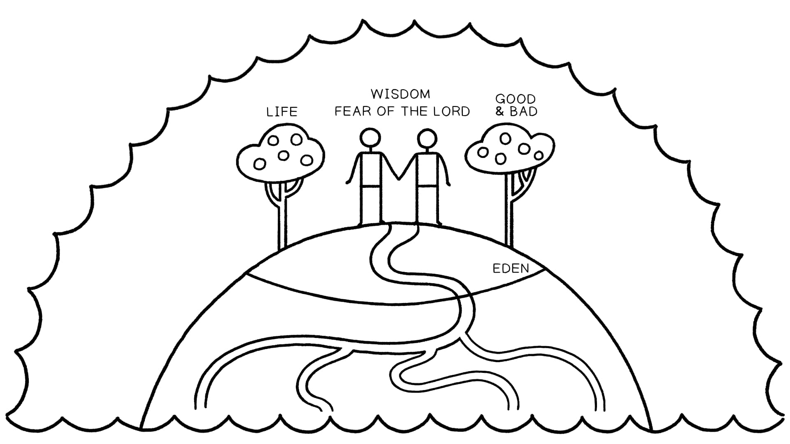

As árvores são introduzidas em Gênesis 2:9 e aparecem novamente em Gênesis 2:16-17.The trees are introduced in Genesis 2:9 and appear again in Genesis 2:16-17.
"[A árvore da vida] representa uma vida além da vida original que Deus soprou no humano. O primeiro humano por natureza é suscetível à morte ... No entanto, comer continuamente da árvore poderia renovar a vida e prevenir a morte. Além da desobediência ao comando de Deus, os mortais tinham acesso a esta árvore ... A árvore da vida permite à humanidade transcender sua mortalidade, o estado em que foi criada no sexto dia, para que possa mover-se a uma dimensão superior ... à vida eterna e imortalidade. Ao participar deste ... fruto pela fé, participa-se desta vida eterna. Esta mais alta potência de vida estava disponível no jardim e torna-se novamente disponível a nós à medida que reentramos no jardim-templo através do segundo Adão ... e aguardamos a ressurreição de nossos corpos.""[The tree of life] represents life that is beyond the original life that God breathed into human. The first human by nature is susceptible to death ... Nevertheless, continued eating from the tree could renew life and prevent death. Apart from disobedience to God's command, mortals had access to this tree ... The tree of life allows humanity to transcend its mortality, the state in which it was created on the sixth day, so it can move to a higher dimension ... to eternal life and immortality. As one partakes of this ... fruit by faith, one participates in this eternal life. This highest potency of life was available in the garden and becomes once again available to us as we reenter the temple-garden through the second Adam ... and look forward to the resurrection of our bodies."
Waltke, Bruce e Charles Yu (2007). An Old Testament Theology: An Exegetical, Canonical, and Thematic Approach. Zondervan.Waltke, Bruce and Chales Yu (2007). An Old Testament Theology: An Exegetical, Canonical, and Thematic Approach. Zondervan.
Este estado edênico é frágil e condicional à confiança e à vida pelo comando de Deus. Em Gênesis 1, Deus sozinho é o provedor e conhecedor do que é bom e não bom. Isto é, ele tem a sabedoria para saber o que é necessário para a humanidade cumprir seu papel como parceiros de Deus no "jardim" de toda a criação. Este papel dignificado para os humanos, no entanto, vem com uma grande responsabilidade e escolha. Eles aprenderão sabedoria de Deus, ou a tomarão para si mesmos?This Edenic state is fragile and conditional upon trusting and living by God's command. In Genesis 1, God alone is the provider and knower of what is good and not good. That is, he has the wisdom to know what is necessary for humanity to fulfill their role as God's partners in the "gardenizing" all of creation. This dignified role for the humans, however, comes with a great responsibility and choice. Will they learn wisdom from God, or will they take it for themselves?
No jardim "bom", há árvores carregadas de fruto para comer e cultivar, e no centro do jardim (de onde flui o rio) está a árvore da vida. É uma imagem do dom supremo de Deus para a criação — a oportunidade de compartilhar e receber a própria bondade e vida de Deus em si mesmo. Mas o acesso contínuo à árvore da vida é condicional a não tomar da árvore do conhecimento de tov e ra. O significado desta frase é importante para a lógica da narrativa, então devemos mergulhar profundamente no significado destas palavras-chave.In the "good" garden, there are trees loaded with fruit for eating and cultivating, and in the center of the garden (from which flows the river) is the tree of life. It's an image of God's ultimate gift to creation—the opportunity to share in and receive God's own goodness and life into oneself. But ongoing access to the tree of life is conditional upon not taking from the tree of knowing tov and ra. The meaning of this phrase is important for the logic of the narrative, so we must take a deep dive into the meaning of these key words.
Vejamos as palavras tov e ra na Bíblia Hebraica para desenvolver um retrato para nossa definição destes termos.Let's look at the words tov and ra in the Hebrew Bible to develop a portrait for our definition of these terms.
"Bom" (Heb. tov): (1) o que é moralmente/eticamente bom, (2) o que é benéfico, agradável ou em boa condição."Good" (Heb. tov): (1) what is morally/ethically good, (2) what is beneficial, pleasant or in good condition.
"Mau/Ruim" (Heb. ra): (1) o que é moralmente/eticamente mau, (2) o que é prejudicial, desagradável ou em má condição."Bad/Evil" (Heb. ra): (1) what is morally/ethically bad, (2) what is harmful, unpleasant, or in poor condition.
As palavras tov e ra adquirem um significado mais matizado quando você olha para a frase "conhecer tov e ra". Esta frase rara ocorre em outro lugar para descrever crianças. Portanto, "conhecer tov e ra" é um sinal de maturidade.The words tov and ra pick up more nuanced meaning when you look at the phrase "knowing tov and ra." This rare phrase occurs elsewhere to describe children. Therefore, "knowing tov and ra" is a sign of maturity.
Como podemos ver nestes exemplos, não conhecer tov e ra é uma qualidade de bebês ou crianças. O conhecer tov e ra diz respeito a discernimento e maturidade moral. A questão é: Quem você permitirá que lhe ensine o conhecimento de tov e ra?As we can see from these examples, not knowing tov and ra is a quality of infants or children. The knowing of tov and ra is about moral discernment and maturity. The question is: Who will you allow to teach you the knowledge of tov and ra?
É claro a partir de Gênesis 2:17 que há um modo de conhecer tov e ra que leva à morte. No entanto, isso também sugere que discernir tov e ra é realmente uma coisa boa que Adão e Eva precisarão aprender para cumprir seu propósito.It is clear from Genesis 2:17 that there is a way of knowing tov and ra that leads to death. However, it also suggests that discerning tov and ra is actually a good thing that Adam and Eve will need to learn to carry out their purpose.

A narrativa em Gênesis 1-2 mostra que Deus sabe o que é "agradável/benéfico" e que ele proverá tov quando algo não for tov (a mulher), isto é, ra. Assim a árvore representa uma escolha para os humanos. Viverão com Deus, permitindo que ele conheça/defina tov e ra? Presumivelmente eles precisam deste conhecimento à medida que amadurecem, mas quem o ensinará a eles? Aprenderão observando o conhecimento de Deus em ação? Adão e Eva são retratados como crianças. A árvore do conhecimento de tov e ra representa dois modos de como conhecer e experimentar tov e ra. Tomarão este conhecimento para si mesmos para que "se tornem como Elohim", conhecendo o que é tov e ra? Ou permitirão que Deus lhes ensine sabedoria?The narrative in Genesis 1-2 shows that God knows what is "pleasant/beneficial" and that he will provide tov when something is not tov (the woman), that is, ra. So the tree represents a choice for the humans. Will they live with God, allowing him to know/define tov and ra? Presumably they need this knowledge as they mature, but who will teach it to them? Will they learn from watching God's knowledge at work? Adam and Eve are portrayed as children. The tree of knowing tov and ra represents two modes for how to know and experience tov and ra. Will they take this knowledge for themselves so that they "become like Elohim," knowing what is tov and ra? Or will they allow God to teach them wisdom?
Provérbios 3:13-18 (NAA): "13 Como é feliz o homem que acha sabedoria, e o homem que obtém entendimento. 14 Pois o seu lucro é melhor do que o lucro de prata, e a sua renda melhor do que o ouro fino. 15 Ela é mais preciosa do que as jóias; e nada do que você deseja se compara a ela. 16 Longa vida está na sua mão direita; na sua esquerda, riquezas e honra. 17 Seus caminhos são caminhos agradáveis, e todas as suas veredas são paz. 18 Ela é árvore de vida para os que a abraçam, e felizes são todos os que a retêm." Não é uma questão de se este conhecimento é bom ou mau. É sobre de quem nós confiamos a sabedoria para alcançá-lo.Proverbs 3:13-18 (NASB): "13 How blessed is the man who finds wisdom and the man who gains understanding. 14 For her profit is better than the profit of silver and her gain better than fine gold. 15 She is more precious than jewels; and nothing you desire compares with her. 16 Long life is in her right hand; in her left hand are riches and honor. 17 Her ways are pleasant ways and all her paths are peace. 18 She is a tree of life to those who take hold of her, and happy are all who hold her fast." It's not a question of whether this knowledge is a good or bad thing. It's about whose wisdom we trust to attain it.
As duas árvores no centro do jardim serão mais tarde colocadas em analogia ao papel da Torá no pacto de Israel com Deus. Da mesma forma que as árvores ofereciam a Adão e Eva uma escolha entre a vida e a morte, a Torá faria o mesmo para Israel.The two trees at the center of the garden will later be set in analogy to the role of the Torah in Israel's covenant with God. Just as the trees offered Adam and Eve a choice between life and death, the Torah would do the same for Israel.
| Árvores em GênesisTrees in Genesis | Torá em DeuteronômioTorah in Deuteronomy |
|---|---|
| Gênesis 2:9: “E Deus fez brotar … a árvore da vida no centro do jardim, e a árvore do conhecimento do bem e do mal.”Genesis 2:9: “And God caused to sprout … the tree of life in the center of the garden, and the tree of knowing good and evil.” | Deuteronômio 10:4-5: “O SENHOR escreveu nas tábuas … as dez palavras que o SENHOR tinha falado a vós na montanha, do meio do fogo … Então virei e desci da montanha, e pus as tábuas na arca que tinha feito; e ali estão, como o SENHOR me ordenou.”Deuteronomy 10:4-5: “Yahweh wrote on the tablets … the ten words which the LORD had spoken to you on the mountain from the midst of the fire … Then I turned and came down from the mountain and put the tablets inside the ark which I had made; and there they are, as the LORD commanded me.” |
| Gênesis 2:15: “E Yahweh ordenou ao ser humano, dizendo: ‘Do fruto de toda árvore poderás comer livremente. Mas do fruto da árvore do conhecimento do bem e do mal não comerás, porque no dia em que dele comeres, certamente morrerás.’”Genesis 2:15: “And Yahweh commanded the human saying, ‘From the fruit of every tree you may surely eat. But from the fruit of knowing good and evil you may not eat from it, for in the day of your eating, you will surely die.’” | Deuteronômio 31:26: “Tomai este livro da lei e ponde-o ao lado da arca da aliança do SENHOR vosso Deus, para que ali esteja por testemunha contra vós.”Deuteronomy 31:26: “Take this book of the law and place it beside the ark of the covenant of the LORD your God, that it may remain there as a witness against you.” |
| As duas árvores oferecem a escolha entre vida e morte.The two trees offer the choice between life and death. | Deuteronômio 30:15, 19: “Eis que, hoje, pus diante de ti a vida e o bem, a morte e o mal … a vida e a morte, a bênção e a maldição; escolhe, pois, a vida, para que vivas, tu e a tua descendência.”Deuteronomy 30:15, 19: “Behold, today I have set before you life and good, death and evil … life and death, blessing and cursing, therefore choose life that both you and your seed may live.” |
Árvores e Torá. Criado por Tim Mackie para BibleProject Classroom: Adão a Noé (2020).Trees and Torah. Created by Tim Mackie for BibleProject Classroom: Adam to Noah (2020).
"Dentro do jardim, Yahweh havia colocado tanto a árvore da vida quanto a árvore do conhecimento do bem e do mal. Consideradas em conjunto, com seus frutos conectados à vida e à morte respectivamente, as árvores podem ser vistas funcionando como a Torá, implorando a Adão que escolhesse a vida, assim como Moisés implorou a Israel em Deuteronômio 30. Resistindo à segunda árvore, cujo fruto oferecia sabedoria independente de Deus, era a sabedoria de Adão, permitindo-lhe aperfeiçoar o temor de Yahweh através da submissão de sua vontade a Deus... Assim como para Salomão e suas esposas estrangeiras (1 Reis 11), também para Adão: a escolha entre as duas árvores é apresentada como uma escolha entre alegiança a Yahweh e sua esposa, com quem ele é 'uma só carne'. Isto, através da astuta orquestração da serpente, é o teste para Adão.""Within the garden Yahweh had set both a tree of life and a tree of the knowledge of good and evil. Taken together, with their fruits connected to life and death respectively, the trees may be seen to function like the Torah, imploring Adam to choose life, just as Moses implored Israel in Deuteronomy 30. Resisting the second tree, the fruit of which offered wisdom independent from God, was Adam's wisdom, allowing him to perfect the fear of Yahweh through submission of his will to God's ... Just as for Solomon and his foreign wives (1 Kings 11), so too for Adam: the choice between the two trees is cast as a choice between allegiance to Yahweh and his wife, with whom he is 'one flesh.' This, through the cunning orchestration of the serpent, is the test for Adam?"
Morales, Michael (2015). Who Shall Ascend the Mountain of the Lord: A Biblical Theology of the Book of Leviticus. IVP Academic.Morales, Michael (2015). Who Shall Ascend the Mountain of the Lord: A Biblical Theology of the Book of Leviticus. IVP Academic.
A árvore em Gênesis propõe um teste. É desejável de vista e bom para comer, e os humanos tomam o fruto. À medida que continuamos lendo a Bíblia, vemos que este padrão continua em futuras narrativas de queda.The tree in Genesis poses a test. It is desirable of sight and good to look at, and the humans take the fruit. As we keep reading the Bible, we see this pattern continue in future fail narratives.
Estes são apenas alguns exemplos de uma imagem flexível usada para conectar histórias a um padrão maior.These are just a few examples of a flexible image used to connect stories to a greater pattern.
O conhecimento do bem e do mal era algo que Deus queria manter distante da humanidade? Por que Deus ordenou que os humanos não tomassem desta árvore?Was the knowledge of good and bad something that God wanted to keep from humanity? Why did God command the humans not to take from this tree?